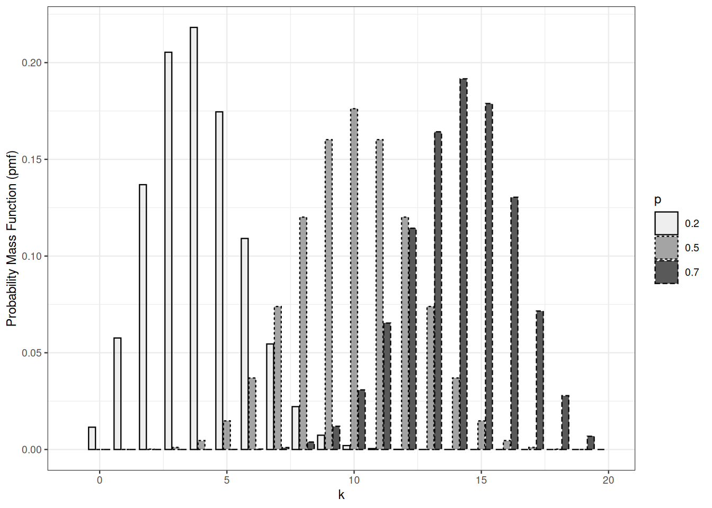
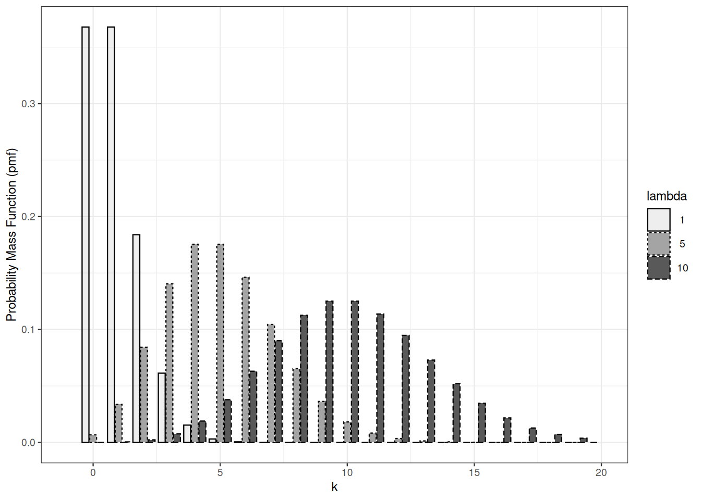
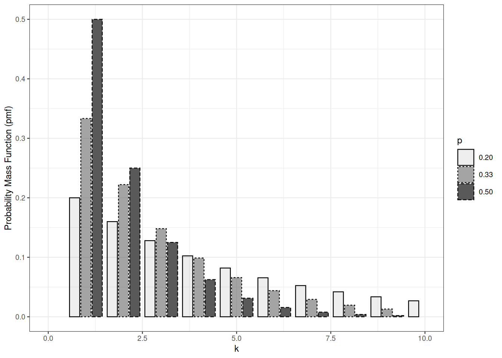

5 Familles de lois discrètes
L’objectif de cette leçon est de se familiariser avec d’importantes familles de lois discrètes et de maîtriser le calcul sur les lois. Les lois de probabilité discrètes seront présentées via les fonctions de répartition et surtout les fonctions de masse.
Dans cette leçon, l’univers \(\Omega\)$ est un sous-ensemble de \(\mathbb{N}^d\), fini ou dénombrable ; la \(\sigma\)-algèbre naturelle à considérer est la partie \(2^\Omega\).
5.1 Bernoulli et binomiale
Une loi de Bernoulli est entièrement déterminée par son paramètre.
L’espérance d’une loi de Bernoulli de paramètre \(p\) vaut \(p\).
Le lien entre les lois de Bernoulli et binomiale est évident : une loi de Bernoulli est une loi binomiale de taille \(1\). Ce lien va plus loin : la somme de variables aléatoires de Bernoulli indépendantes de même paramètre de succès suit une loi binomiale.
Supposons maintenant \(\Omega^{\prime} = \{0,1\}^n\).
Preuve. Il suffit de vérifier que les fonctions de masse coïncident.
Pour \(k \in 0, \ldots, n\)
\[\begin{align*} P\Big\{ \sum_{i=1}^n X_i = k \Big\} & = \sum_{x_1, \ldots, x_n \in \{0,1 \}^p} \mathbb{I}_{\sum_{i=1}^n x_i=k} P \Big\{ \wedge_{i=1}^n X_i = x_i\Big\} \\ & = \sum_{x_1, \ldots, x_n \in \{0,1 \}^p} \mathbb{I}_{\sum_{i=1}^n x_i=k} \prod_{i=1}^n P \Big\{ X_i = x_i\Big\} \\ & = \sum_{x_1, \ldots, x_n \in \{0,1 \}^p} \mathbb{I}_{\sum_{i=1}^n x_i=k} \prod_{i=1}^n p^{x_i} (1-p)^{1-x_i} \\ & = \sum_{x_1, \ldots, x_n \in \{0,1 \}^p} \mathbb{I}_{\sum_{i=1}^n x_i=k}\, p^{k} (1-p)^{n-k} \\ & = \binom{n}{k} p^{k} (1-p)^{n-k} \, . \end{align*}\]
Cette observation facilite le calcul des moments de la loi binomiale.
L’espérance d’une loi de Bernoulli de paramètre \(p\) vaut \(p\) ! Sa variance vaut \(p(1-p)\).
Par linéarité de l’espérance, l’espérance de la loi binomiale de paramètres \(n\) et \(p\) vaut \(np\).
La variance d’une somme de variables aléatoires indépendantes est la somme des variances ; la variance de la loi binomiale de paramètres \(n\) et \(p\) vaut donc \(np(1-p)\).
Plus d’informations sur wikipedia.
Lois binomiales de même paramètre de succès
5.2 Poisson
La loi de Poisson apparaît comme limite de lois binomiales dans diverses circonstances liées aux phénomènes d’événements rares.

L’espérance de la loi de Poisson de paramètre \(\lambda\) vaut \(\lambda\). La variance d’une loi de Poisson est égale à son espérance.
\[\begin{align*} \mathbb{E} X & = \sum_{n=0}^\infty \mathrm{e}^{-\lambda} \frac{\lambda^n}{n!} \times n\\ & = \lambda \times \sum_{n=1}^\infty \mathrm{e}^{-\lambda} \frac{\lambda^{n-1}}{(n-1)!} \\ & = \lambda \, . \end{align*}\]
Preuve. Nous vérifions la proposition de la manière la plus simple et la plus fastidieuse. Nous calculons la fonction de masse de la loi de \(X+Y\). Supposons \(X \sim \operatorname{Po}(\lambda), Y \sim \operatorname{Po}(\mu)\).
Pour chaque \(k \in \mathbb{N}\) : \[\begin{align*} \Pr \{ X+Y =k\} & = \Pr \{ \bigvee_{m=0}^k (X =m \wedge Y =k-m) \} \\ & = \sum_{m=0}^k \Pr \{ X =m \wedge Y =k-m \} \\ & = \sum_{m=0}^k \Pr \{ X =m \} \times \Pr\{ Y =k-m \} \\ & = \sum_{m=0}^k \mathrm{e}^{-\lambda} \frac{\lambda^m}{m!} \mathrm{e}^{-\mu} \frac{\mu^{k-m}}{(k-m)!} \\ & = \mathrm{e}^{-\lambda - \mu} \frac{(\lambda+\mu)^k}{k!} \sum_{m=0}^k \frac{k!}{m! (k-m)!}\left(\frac{\lambda}{\lambda+\mu}\right)^m \left(\frac{\mu}{\lambda+\mu}\right)^{k-m} \\ & = \mathrm{e}^{-\lambda - \mu} \frac{(\lambda+\mu)^k}{k!} \sum_{m=0}^k \binom{k}{m}\left(\frac{\lambda}{\lambda+\mu}\right)^m \left(\frac{\mu}{\lambda+\mu}\right)^{k-m} \\ & = \mathrm{e}^{-\lambda - \mu} \frac{(\lambda+\mu)^k}{k!} \left( \frac{\lambda}{\lambda+\mu} + \frac{\mu}{\lambda+\mu}\right)^k \\ & = \mathrm{e}^{-(\lambda + \mu)} \frac{(\lambda+\mu)^k}{k!} \end{align*}\] La dernière expression est la fonction de masse de \(\operatorname{Po}(\lambda + \mu)\) en \(k\).
5.3 Géométrique
Une loi géométrique est une loi de probabilité sur \(\mathbb{N} \subset \{0,1\}\). Elle dépend d’un paramètre \(p>0\).
Supposons que nous puissions lancer une pièce biaisée une infinité de fois. Le nombre de lancers nécessaires jusqu’à obtenir un pile suit une loi géométrique.
Soit \(X\) de loi géométrique de paramètre \(p\). La loi géométrique se définit aisément par sa fonction de queue. Dans l’événement \(X>k\), les \(k\) premiers résultats doivent être des faces. \[ P \{ X > k \} = (1-p)^k \] La fonction de masse de la loi géométrique s’en déduit : \[ P \{X = k \} = (1-p)^{k-1} - (1-p)^k = p \times (1-p)^{k-1} \qquad \text{for } k=1, 2, \ldots \] En moyenne, il faut lancer la pièce \(p\) fois jusqu’à obtenir un pile : \[ \mathbb{E}X = \sum_{k=0}^\infty P \{ X > k \} = \frac{1}{p} \]
Il est aussi possible de définir les variables aléatoires géométriques comme le nombre de lancers nécessaires avant d’obtenir un pile. Cela nécessite de modifier la fonction quantile, la fonction de masse, l’espérance, et ainsi de suite. C’est la convention utilisée par R.

Les sommes de variables aléatoires géométriques indépendantes ne suivent pas une loi géométrique.